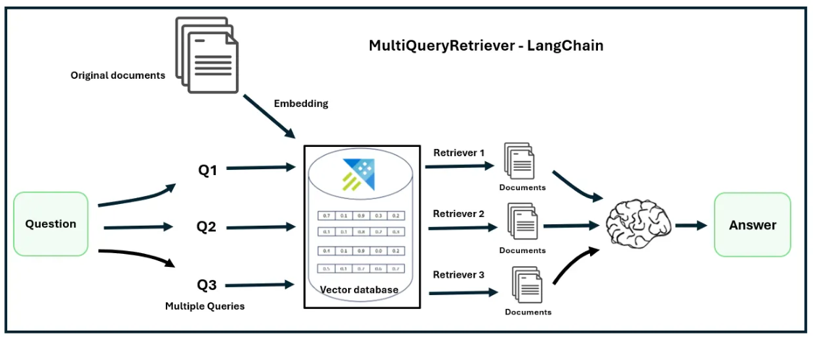

RAG 召回优化
在 RAG 系统中，召回（Retrieval Recall）质量直接决定了最终回答的上限。即使大语言模型具有很强 的推理能力，如果检索阶段没有找到真正相关的文档，大模型也无法生成正确答案。因此，在实际工 程实践中，很多团队都会投入大量精力优化 RAG 的召回能力。 召回优化的核心目标是：尽可能找到更多与用户问题相关的文档，同时避免引入过多无关信息。如果 召回结果过少，可能会遗漏关键知识；如果召回结果过多，则可能增加噪声，影响模型生成质量。因 此，一个高质量的 RAG 系统需要在召回率和准确率之间取得平衡。 在实践中，常见的召回优化方法包括 Query Rewrite、Query Expansion 以及 Multi Query Retrieval 等技术。这些方法主要从查询层面进行优化，通过改写或扩展用户问题，使检索系统能够找 到更多相关内容。
Query Rewrite
Query Rewrite（查询重写）是 RAG 系统中最常见的召回优化技术之一。它的核心思想是：在进行向 量检索之前，对用户问题进行语义重写，使其更加清晰、完整，从而提升检索效果。 在真实应用场景中，用户输入的问题往往非常简短，甚至包含大量口语表达。例如，用户可能会输入 类似“退款怎么弄？”或“这个产品能换吗？”这样的句子。虽然人类能够理解这些表达，但对于检 索系统来说，这类问题可能缺乏足够的语义信息，从而影响检索结果。 通过 Query Rewrite，可以将用户问题转换为更加明确的查询，例如： 用户输入：
1 退款怎么弄
系统重写为：
1 商品退款流程是什么？如何申请退款？
在许多 RAG 系统中，这一步通常由大语言模型完成。模型会根据上下文理解用户意图，然后生成一个 更加适合检索的查询表达。通过这种方式，可以显著提升向量检索的准确率。
Query Expansion
Query Expansion（查询扩展）是一种通过增加相关关键词来提高召回率的方法。它的基本思路是：除 了用户原始问题之外，还生成一些语义相近或相关的查询，从而扩大检索范围。
例如，当用户提出问题：
1 如何申请信用卡？
系统可以自动扩展为多个相关查询，例如：
-
信用卡申请流程
-
办理信用卡需要哪些材料
-
银行信用卡申请条件
这些扩展查询会分别进行向量检索，然后将所有结果合并，从而增加找到相关文档的概率。
查询扩展可以通过多种方式实现，例如：
-
使用大语言模型生成相关问题
-
使用同义词词典扩展关键词
-
使用知识图谱扩展相关概念
在许多复杂知识库中，Query Expansion 可以显著提升召回率，尤其是在用户问题表达不完整或关键 词较少的情况下。
Multi Query Retrieval
Multi Query Retrieval 是近年来在 RAG 系统中越来越流行的一种召回优化方法。与 Query Expansion 类似，它的核心思想是通过多个查询同时进行检索，但其实现方式更加系统化。

在 Multi Query Retrieval 中，大语言模型会根据用户问题生成多个不同表达方式的查询。例如，当用 户输入一个问题时，系统可能会生成 3 到 5 个不同版本的查询，例如： 用户问题：
1 如何重置账户密码？
系统生成的多个查询：
-
如何修改账户密码
-
忘记密码后如何找回
-
重置登录密码的步骤
-
账户密码恢复流程
随后，系统会分别对这些查询进行向量检索，并将所有检索结果合并。通过这种方式，可以避免由于 单一查询表达方式导致的检索偏差。
Multi Query Retrieval 的优势在于：
首先，它可以覆盖更多语义表达方式，从而提高召回率。 其次，它能够减少 Embedding 模型在语义表示上的偏差。 最后，它可以在复杂知识库中发现更多潜在相关文档。
在实际系统中，Multi Query Retrieval 通常会与后续的 Rerank（重排序） 机制结合使用，以确保最 终输入到大模型中的上下文仍然是最相关的内容。
召回优化的整体思路
综合来看，RAG 召回优化的核心目标是提高检索系统的语义覆盖能力，使系统能够理解不同表达方式 的用户问题，并找到最相关的知识内容。
在实际工程实践中，很多成熟的 RAG 系统通常会同时使用多种召回优化策略。例如：
-
首先使用 Query Rewrite 改写用户问题
-
然后通过 Multi Query Retrieval 生成多个查询
-
最后对检索结果进行合并和过滤
-
通过这种多层优化机制，可以显著提升 RAG 系统的检索效果，从而让大语言模型生成更加准确的回 答。
随着 RAG 技术的发展，越来越多的系统开始引入更加复杂的检索优化方法，例如混合搜索、结果重排 序以及上下文压缩等技术。这些内容将在下一节 RAG 进阶技术 中继续进行深入介绍。